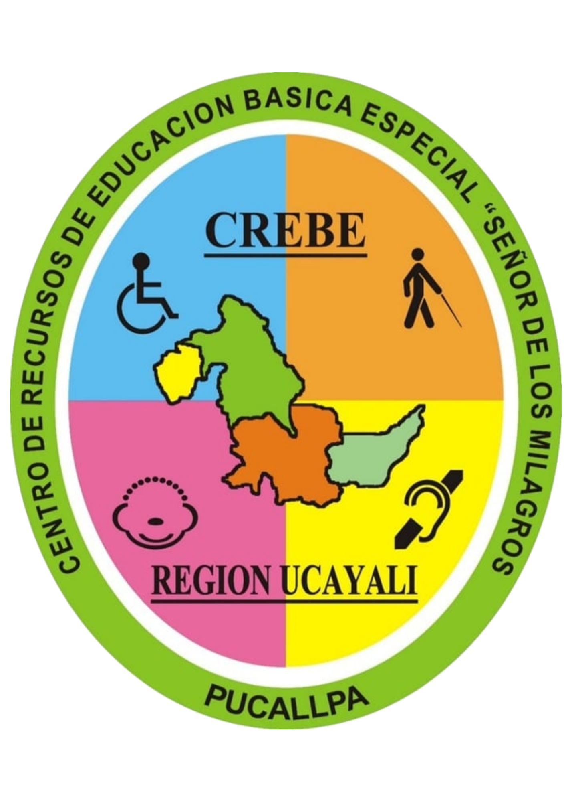

Generador Braille
Herramienta para escribir letras, números, palabras o frases y obtener su representación visual en sistema Braille.
Disponible
Ingresar

CREBE "Señor de los Milagros" - Ucayali
Centro de Recursos de Educación Básica Especial
Plataforma educativa accesible
Repositorio digital de recursos pedagógicos para apoyar la inclusión, la accesibilidad y la atención a la diversidad
Banco de recursos
Esta página organiza recursos educativos accesibles en un solo espacio. Selecciona una tarjeta para ingresar al material disponible o revisar las secciones que se encuentran en construcción.
Herramienta para escribir letras, números, palabras o frases y obtener su representación visual en sistema Braille.
Buscador educativo conectado a ARASAAC para consultar pictogramas de apoyo a la comunicación, rutinas visuales y accesibilidad cognitiva.
Herramienta conectada a ARASAAC para seleccionar pictogramas, organizar secuencias de actividades y descargar la rutina en PDF o JPG.
Sección proyectada para recursos visuales de apoyo a la comunicación accesible y al trabajo pedagógico.
Apartado destinado a textos adaptados con lenguaje claro, estructura sencilla y apoyos visuales.
Recursos orientados a mejorar la visibilidad mediante contraste, tamaño de letra y distribución limpia del contenido.
Sección futura para orientaciones sobre adaptación de materiales, accesibilidad pedagógica y uso de recursos inclusivos.
Apartado proyectado para orientaciones breves, actividades de apoyo en casa y acompañamiento familiar.
Espacio previsto para modelos editables de actividades, registros, tarjetas y materiales de uso pedagógico.
Conoce el recurso
Esta página permite reunir recursos educativos accesibles en una sola ruta de consulta. Su finalidad es facilitar el acceso a materiales de apoyo para docentes, familias y estudiantes, manteniendo una organización clara y progresiva.